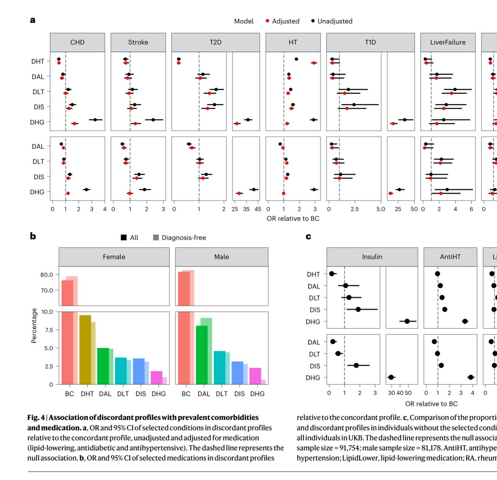
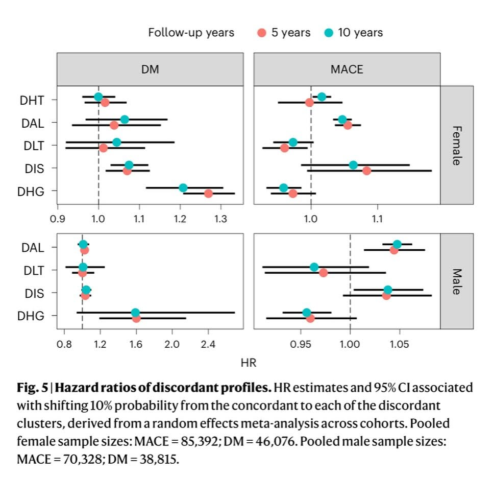
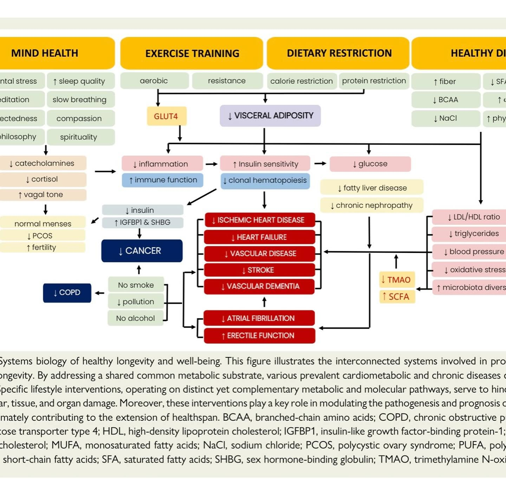

AI summary & key facts
Louis shares Luigi Fontana's summary of a Nature Medicine paper on discordant health profiles. Many people with normal BMI have poor lipids, blood pressure or glucose, especially with visceral fat, and metabolic markers such as insulin, glucose, cholesterol, hsCRP and blood pressure predict risk better than BMI, with differences by ethnicity.
- South Asians at higher hyperglycemia risk at normal BMI
- African populations may have higher susceptibility to inflammation and hypertension
- Metabolic markers predict long-term risk better than BMI alone
Having a low BMI is not enough for certain people.
🔬 Beyond BMI: The True Power of Cardiometabolic and Molecular Profiles 🔬
While BMI has long been a widely used indicator of health, recent studies — including my own — have shown that cardiometabolic and molecular profiles provide a far more accurate reflection of overall health and risk.
Paper · Nat Med · 2025Subclassification of obesity for precision prediction of cardiometabolic diseasesObesity and cardiometabolic disease often, but not always, coincide. Distinguishing subpopulations within which cardiometabolic risk diverges from the risk expected for a given body mass index (BMI) may facilitate precision prevention of cardiometabolic diseases. Accordingly, we performed unsupervised clustering in four European population-based cohorts ( N ≈ 173,000). We detected five discordant profiles consisting…doi.org
The new research on discordant health profiles reveals some eye-opening insights:
- Discordant Health Profiles: Many individuals with a “normal” BMI may still be at risk for cardiovascular disease and diabetes due to factors such as poor lipid profiles, elevated blood pressure, or glucose imbalances. This is particularly true for those with visceral fat despite normal weight.
- Ethnic and Molecular Differences: People from South Asian backgrounds are at increased risk for hyperglycemia and metabolic dysfunction, even with a normal BMI, while African populations may have higher susceptibility to inflammation and hypertension.
- Better Risk Prediction: By focusing on metabolic health markers like insulin, glucose, cholesterol and hsCRP levels, and blood pressure, we can get a much more accurate prediction of long-term health risks, rather than relying on BMI alone.
- Precision Medicine: The study emphasizes the need for personalized healthcare interventions, considering both genetic and environmental factors, to better manage health risks, especially for those with discordant profiles.
As these findings suggest, weight is not the only or most accurate measure of health. Instead, focusing on cardiometabolic and molecular health allows us to more effectively assess risk and provide targeted, personalized care.
💡 The bottom line: Health isn’t defined by a single number—it’s about the complex cardiometabolic and molecular profiles, emotional and spiritual health that truly reflect an individual’s health risks.
#CardiometabolicHealth #PrecisionMedicine #HealthInnovation #BMI #PersonalizedCare #MolecularProfiles #RiskPrediction



